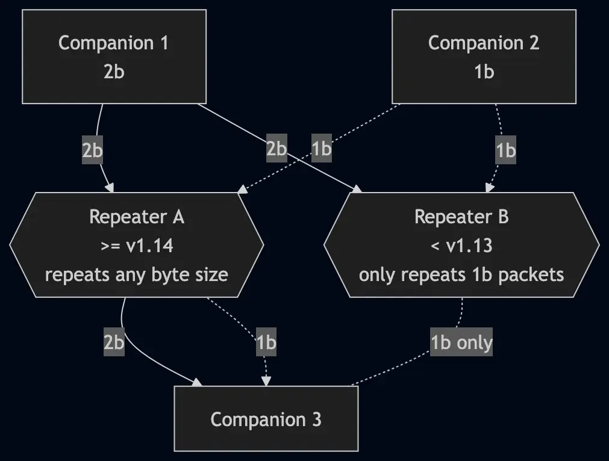

MeshCore 2-byte vs 1-byte paths
Every node(radio) on the network gets a nickname. In 1-byte mode that's something like `a1`. In 2-byte mode that's `a1b2`. 1-byte conflicts at 256 unique nicknames while 2-byte has 65,536.
Explaining key-prefixes
Every node in the mesh has a Public Key. The first characters of that key are treated as the address so other nodes know how to route messages. With 1-byte paths(the first 2 characters of the public key), there are only 256 possible nicknames to go around, so as the network grows, more and more nodes end up sharing the same one. When that happens, messages can get handed off to the wrong node and routing breaks down.
2-byte paths use the first 4 characters of the public key, allowing 65,536 possibilities instead of 256. More room, fewer mix-ups, much healthier mesh as it grows.
The catch(es): every repeater between you and the person you're messaging has to understand 2-byte nicknames, or it'll drop the message. That means firmware upgrades. It also reduces the max number of hops from 64 to 32.

Requirements
- Repeaters: firmware 1.14 or later. Older repeaters can't forward 2-byte paths.
- Companions: firmware 1.14 or later, plus the latest phone app (the toggle lives under Experimental Settings).
If any repeater in the path is on older firmware, 2-byte traffic won't make it through. Plan upgrades accordingly.
Turning it on
Repeaters
- Upgrade to at least 1.14
- Connect to the repeater's console and run:
set path.hash.mode 1
Companions
Companions need an extra step to actually send messages using 2-byte paths:
- Confirm the companion is on firmware 1.14 or later.
- Open the phone app.
- Go to Experimental Settings.
- Set Default Path-Hash Size to 2-byte (max 32 hops).
Once that's on, messages from the companion will use 2-byte paths when available.